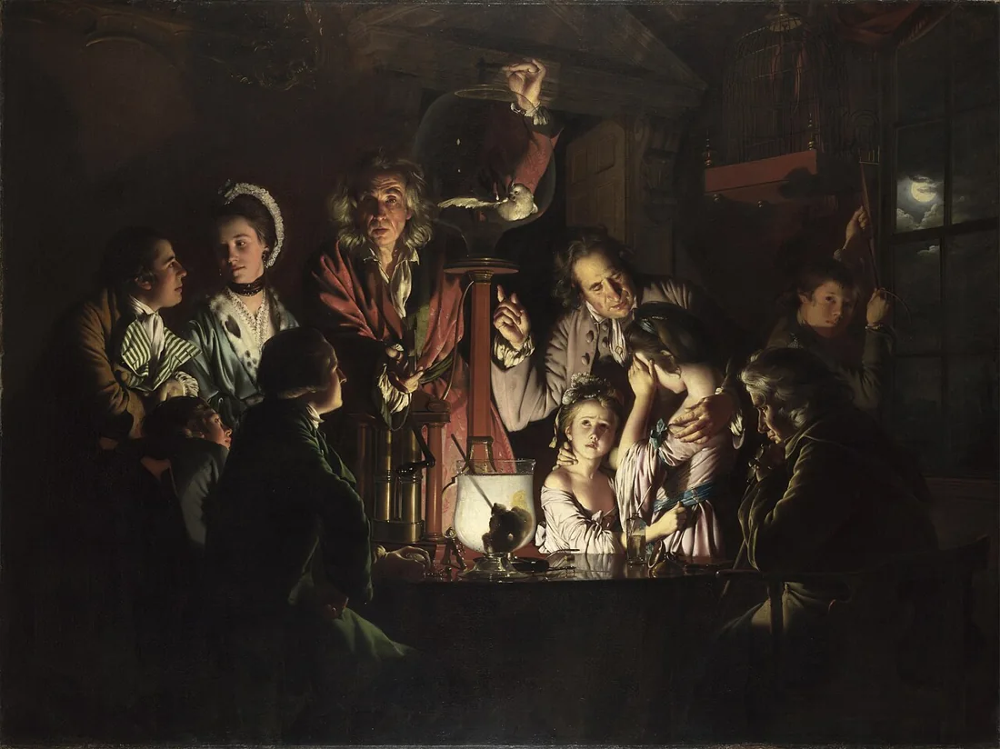

Recupera
O grupo reúne a pergunta e os materiais.
De memória
Reúnam os materiais do grupo. Escrevam a pergunta, a resposta provisória e a dúvida que precisam de resolver.
Que diferença há entre uma observação e uma hipótese?
Confirmar
A observação indica o que está visível ou documentado. A hipótese propõe uma explicação que ainda precisa de ser verificada.
O que precisa uma pessoa de saber para poder aceitar ou recusar o que lhe propõem?
Confirmar
Precisa de conhecer a situação e de poder dizer que não. Sem informação nem possibilidade de recusa, não há consentimento.
Vê
Confirmem o enunciado antes de investigar.
Confirmem o enunciado: teatro-documento de 5 a 8 minutos, com fontes identificadas e defesa das escolhas. Distribuam funções e definam o que cada pessoa vai verificar.
- PerguntaO que queremos saber?
- FonteEm que nos apoiamos?
- RespostaO que podemos defender?
Investiga
Em grupo. O ecrã serve para procurar e verificar fontes.
- Delimitem a pergunta: sobre quem, que situação e que problema?
- Confrontem as fontes. Registem a passagem que sustenta cada afirmação importante.
- Testem uma objeção. O que precisam de rever na resposta?
Comparar razões
Não basta reunir documentos. Expliquem como cada passagem sustenta a resposta e o que não permite concluir. Duas páginas que se copiam não são duas confirmações independentes.
Prepara
Em papel ou no ficheiro do grupo.
Em papel
Selecionem os documentos e escrevam o guião do teatro-documento. Identifiquem as fontes das falas e dos dados. Façam uma leitura de verificação e preparem a defesa.
GuardarPergunta → fontes → teatro-documento → defesa.
Apresenta
Até oito minutos por grupo, seguidos de defesa.
Apresentem o trabalho. Respondam a uma pergunta com os documentos à vista. No diário, registem uma escolha fundamentada e uma observação recebida.
Confirma
- A resposta corresponde à pergunta.
- As fontes podem ser reencontradas.
- Cada pessoa explica o seu contributo.
O registo fica neste aparelho.